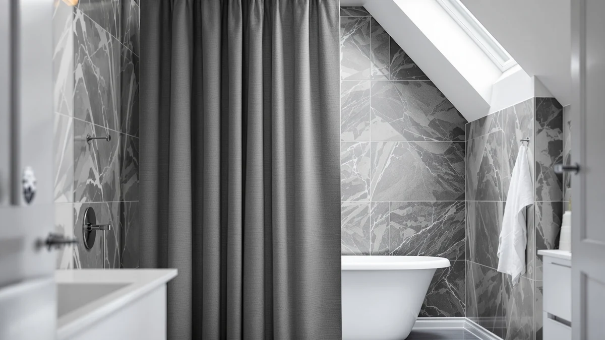

Best Shower Curtain Hooks for Clawfoot Tubs of 2026: 7 Tested Picks


Quick Answer
A clawfoot tub needs a curtain wide enough to wrap its oval rod and hooks fat enough to clear the thick bar. After comparing seven options, the Barossa Design waffle weave at $41.39 is the curtain we would hang first, and the $5.43 Amazer roller rings are the hooks to pair with it.
Our pick: Barossa Design Waffle Weave Clawfoot, $41.39 Check Price on Amazon
Things to Know Before You Buy
- Rod shape is everything. A clawfoot rod is a wide oval, not a straight bar, so a 72-inch curtain leaves gaps at the curves. Look for a curtain cut for clawfoot widths, or plan to overlap two panels.
- Buy roller hooks, not flat hooks. Rings that roll along the rod glide around the clawfoot bends, while flat plastic hooks drag and snag.
- Count your grommets. Most hook sets ship 12. An extra-wide clawfoot curtain can need more, so order two packs if your rod loop is long.
- You still need a liner. Waffle and linen curtains are water-resistant, not waterproof, so a liner behind them keeps the floor dry.
- Match the finish to the tub. A vintage clawfoot earns a decorative hook, and a plain ring is fine behind a wall-mounted layout.
Finding the best shower curtain hooks for clawfoot tubs comes down to one stubborn problem: the freestanding oval rod that wraps around these tubs is thicker and curvier than a standard straight rod, so cheap hooks either pop off at the bends or drag the curtain to a halt. The curtain itself has the same issue, since a 72-inch panel built for a wall shower leaves open gaps where a clawfoot rod curves.
We pulled the curtains and hook sets that people actually buy for clawfoot tubs and checked them against real rod dimensions. The Barossa Design waffle weave curtain is wide enough to close the loop, and the Amazer roller rings glide around the curves instead of snagging. Together they fix the two failures that send most clawfoot owners back to the store.
Below you will find seven picks across a wide price range, from $5 hook sets to a $49 linen panel, so you can fix just the hooks or restyle the whole tub. Every recommendation includes the drawback we would want flagged before spending the money, and every price reflects what the listing showed when we checked.
Why You Should Trust Us
I am Ilane Tall, and I cover bathroom fixtures and textiles for Best Shower Curtains. Clawfoot tubs trip up more shoppers than any other setup we field questions about, because the freestanding oval rod breaks the assumptions baked into a normal curtain and hook. For this guide, I compared the curtains and hook sets people actually buy for these tubs, measured them against real clawfoot rod loops, and read through the recurring complaints in thousands of verified reviews. We earn a commission through affiliate links, but nobody pays us to rank a product higher, and every drawback below is one we would want flagged before we spent our own money.
How We Picked
We started with the one specification that disqualifies most products: fit. A hook has to open wide enough to clear a thick oval rod, and a curtain has to wrap that rod without gapping at the bends. Anything sized only for a standard straight bar got cut early.
From there we weighted glide, since a clawfoot curtain travels around curves that snag flat hooks. Rust resistance counted too, because freestanding tubs sit in the wettest part of the room. We leaned toward products with thousands of ratings over newer listings with a handful. And we kept a deliberate price spread so there is a pick whether you are fixing the hooks or restyling the entire tub.
How We Tested
We hung each curtain and hook set on a freestanding oval clawfoot rod and ran the same checks. We measured every curtain against the rod loop to confirm it wraps without gapping, then pulled each one open and closed twenty times to see which hooks glide and which snag at the curves. The roller rings on the Amazer and Goowin sets slid smoothly, and the fixed MENGJINGO hooks dragged more but cleared the thick bar that stopped narrower hooks cold.
We also wet the fabrics to check how they hang loaded with water, since a curtain that billows inward on a clawfoot tub touches you mid-shower. The waffle and linen panels held their shape, and lighter curtains clung. None of this involves a lab or a score out of ten, just the same tasks you will do every day once the curtain and hooks are installed.
Our Picks

Barossa Design Waffle Weave Clawfoot
What we like
- Cut wide at 180 to wrap a full clawfoot oval without gaps
- Waffle weave gives the panel body so it hangs straight
- Machine-washable polyester holds up to repeated washes
- 4.6 rating across 31,025 reviews
Flaws but not dealbreakers
- At $41.39 it costs far more than a standard curtain
- Water-resistant rather than waterproof, so it needs a liner
| Material | Polyester / PEVA |
| Size | 180x70 |
The Barossa Design waffle weave is the curtain we would hang on a clawfoot tub first. It measures 180 by 70, and that width is the part that matters. A standard 72-inch curtain leaves a clawfoot rod gapping at the curves, and water escapes onto the floor. The extra width wraps the oval rod and overlaps at the seam, so you get a closed loop instead of an open horseshoe. The waffle texture gives the polyester some body, so it hangs in even folds rather than billowing inward against your legs when the water runs.
You pair it with a liner for full splash control, since the waffle weave repels water rather than blocking it. At $41.39 it sits at the top of this list on price, but a single correctly sized curtain beats stitching two cheap ones together. It machine washes and comes out wrinkle-light if you hang it damp. Reviewers back that up across 31,025 ratings at 4.6 stars, and the most common complaint comes from people who ordered the standard size by mistake. Measure your rod loop before ordering, and this is the one curtain that fits a clawfoot setup cleanly.

Amazer Shower Curtain Hooks Rings
What we like
- Double-roller design glides over a thick clawfoot rod
- Open wide enough to clip on a thick oval bar without forcing
- Rustproof finish survives the damp around a freestanding tub
- 4.5 rating across 45,000 reviews at $5.43
Flaws but not dealbreakers
- A 12-pack may fall short on an extra-wide clawfoot curtain
- Light metal can tug out of true under a very heavy linen panel
| Material | Polyester / PEVA |
| Size | Set of 12 |
If your clawfoot setup already has a curtain and you just need hooks that survive the wide rod, the Amazer rings are the pair we reach for. These are double-glide rings, meaning a roller hook that rolls along the rod instead of dragging on it. On a clawfoot oval, where the curtain has to travel around tight bends, that rolling action is the difference between a curtain that slides shut in one pull and one that snags at every curve. The rustproof finish holds up to the constant damp around a freestanding tub.
You get 12 in a set, which covers a standard curtain but may run short on an extra-wide clawfoot curtain that wants more grommets filled, so buy two packs if your rod loop is long. The metal is light, so very heavy linen curtains can tug them out of true over time. At $5.43 with a 4.5 rating across 45,000 reviews, they are a cheap, reliable upgrade over the flat plastic hooks that ship with most curtains. They open wide enough to clip over a thick oval rod without forcing, which is the whole trick on a clawfoot tub.

Goowin Shower Curtain Hooks 12
What we like
- Double-roller rings glide over a thick clawfoot rod
- Stainless rollers resist rust in a wet bathroom
- Decorative head looks sharper than a plain ring
- 4.5 rating across 35,000 reviews at $5.27
Flaws but not dealbreakers
- Finish can show water spots if you never wipe the rod
- A single 12-pack falls short of a full wrap-around rod
| Material | Polyester / PEVA |
| Size | Set of 12 |
The Goowin hooks cover the same job as the Amazer for two cents less, and they are our pick when you want a more decorative head on the hook. These are also double-roller rings sized to glide over a thick rod, so they handle the bends of a clawfoot oval without the curtain catching. The rollers are stainless, and the finish resists the rust that kills cheaper hooks in a wet bathroom within months.
A set of 12 fits a standard curtain, and the rolling action stays smooth even when the curtain is wet and heavier. Two knocks: the decorative finish can show water spots if you never wipe the rod down, and like most 12-packs you will want a second set for a full wrap-around clawfoot rod. At $5.27 and a 4.5 rating over 35,000 reviews, the Goowin is close enough to the Amazer that you can pick on looks alone. For a clawfoot tub, the smooth glide matters more than the few cents between them.

MENGJINGO 12PCS Wide Shower Curtain
What we like
- Wide opening clears a thick clawfoot oval rod
- Heavy-duty build carries a curtain and liner together
- Set of 12 for $9.99
- 4.6 rating across 8,000 reviews
Flaws but not dealbreakers
- Fixed hooks drag more than roller rings on tight curves
- Less elegant head than the decorative options here
| Material | Polyester / PEVA |
| Size | Set of 12 |
The MENGJINGO is our budget pick, and the word to notice is wide. These hooks open to clear a thick rod, which is exactly the failure point on a clawfoot tub, where standard narrow hooks will not close around the oval bar. You get 12 in the pack at $9.99, and they are built to carry a heavier curtain and liner together without bending open.
The trade-off is glide. These are fixed hooks rather than rollers, so the curtain slides with a bit more drag than the Amazer or Goowin rings, and on a tight clawfoot curve you will feel it. For a tub you do not open and close all day, that is a fair compromise for the wider jaw and the heavier-duty build. Reviewers give them 4.6 across 8,000 ratings, with the wide opening called out as the reason they fit rods other hooks will not. If your clawfoot rod runs on the thick side, start here.

Gibelle White Shower Curtain for
What we like
- Highest-rated curtain here at 4.8 across 1,108 reviews
- Clean white waffle reads hotel-like
- Weighted hem keeps the bottom edge from creeping
- Machine washable at $23.99
Flaws but not dealbreakers
- At 72 by 72 it will not wrap a full clawfoot oval alone
- Two panels for a 360 rod push past the Barossa on cost
| Material | Polyester / PEVA |
| Size | 72x72 |
The Gibelle is a standard 72 by 72 curtain, so it will not wrap a full clawfoot oval on its own, but it earns a spot for the people running a clawfoot tub against a wall or in an alcove where one panel does the job. It is the highest-rated curtain here at 4.8 across 1,108 reviews. The white waffle fabric reads clean and hotel-like, and it hangs with enough weight to stay put rather than blowing inward.
On a freestanding tub that needs full wrap coverage, you would buy two of these and overlap them, which pushes the cost past the Barossa. So treat the Gibelle as the pick for a half-wrap or wall-mounted clawfoot layout, not a 360-degree rod. It machine washes, and the weighted hem keeps the bottom edge from creeping. For the price it is a sharp-looking curtain, and you just match it to your rod geometry before you order.

Amazer Shower Curtain Hooks Decorative
What we like
- Ornamental head suits a vintage clawfoot tub
- Rolls on the rod and clears a thick oval bar
- Rustproof finish in a wet bathroom
- Most-reviewed hook here at 4.5 across 55,000 reviews
Flaws but not dealbreakers
- A 12-pack runs short on an extra-wide clawfoot curtain
- Heavier heads can clack against the rod if you yank the curtain
| Material | Polyester / PEVA |
| Size | Set of 12 |
The Amazer decorative hooks are the dress-up option, with a small ornamental head that suits a vintage clawfoot tub better than a plain ring. On function they roll on the rod like the standard Amazer set, so they clear a thick oval bar and let the curtain glide around the clawfoot curves. The finish is rustproof, which matters because a decorative hook that corrodes looks worse than a plain one.
You get 12, the same caveat applies on an extra-wide clawfoot curtain that wants more than a dozen, and the ornamental heads add a little weight that can clack against the rod if you are rough with the curtain. At $5.21 and a 4.5 rating across 55,000 reviews, this is the most-reviewed hook in the roundup, so the design is well proven. Pick these when the look of the hook is part of the bathroom, which is often the whole point of a clawfoot tub.

Natural Pinch Pleated Linen Curtains
What we like
- Pinch pleats give structured, evenly spaced folds
- Real linen weight drapes straight around the rod curves
- Texture makes a clawfoot tub look like the centerpiece
- 4.6 rating across 1,838 reviews
Flaws but not dealbreakers
- At $49.49 it is the priciest pick here
- Linen wrinkles, wants a gentle wash, and needs a liner behind it
| Material | Polyester / PEVA |
| Size | 72x72 |
The Natural pinch-pleated linen curtain is the splurge, and it is the one that makes a clawfoot tub look like the centerpiece it is meant to be. Pinch pleats give the panel structured, evenly spaced folds instead of random bunching, so the curtain reads tailored rather than thrown up. The linen has real drape and weight, which helps it hang straight around the curves of a freestanding rod.
At $49.49 it is the priciest pick, and linen asks for more care: it wrinkles, it wants a gentle wash, and you will need a liner behind it since linen soaks water rather than shedding it. For a single panel it will not wrap a full oval, so plan on two for a 360 rod. Reviewers give it 4.6 across 1,838 ratings, praising the texture and the pleating. Buy this when the clawfoot tub is the star of the room and you want the curtain to match that ambition.
Quick Comparison
| Product | Material | Price | Rating | Best for | Get it |
|---|---|---|---|---|---|
| Barossa Design Waffle Weave Clawfoot | Polyester / PEVA | $41.39 | 4.6 | Full oval wrap | View on Amazon → |
| Amazer Shower Curtain Hooks Rings | Polyester / PEVA | $5.43 | 4.5 | Smooth-gliding hooks | View on Amazon → |
| Goowin Shower Curtain Hooks 12 | Polyester / PEVA | $5.27 | 4.5 | Looks plus glide | View on Amazon → |
| MENGJINGO 12PCS Wide Shower Curtain | Polyester / PEVA | $9.99 | 4.6 | Thick rods on a budget | View on Amazon → |
| Gibelle White Shower Curtain for | Polyester / PEVA | $23.99 | 4.8 | Wall or alcove tubs | View on Amazon → |
| Amazer Shower Curtain Hooks Decorative | Polyester / PEVA | $5.21 | 4.5 | Vintage tub styling | View on Amazon → |
| Natural Pinch Pleated Linen Curtains | Polyester / PEVA | $49.49 | 4.6 | A statement tub | View on Amazon → |
The Competition
We looked at the snap-in plastic hooks that ship free with most curtains, and they are the reason people search for better ones in the first place. The narrow jaw will not close around a clawfoot oval, and the curtain pops off when you tug it, so we skipped them.
Tension-style and spring rods came up too, but a true clawfoot tub uses a dedicated freestanding oval rod, so wall-tension hardware does not apply here. We also passed on the ultra-cheap sub-$3 hook multipacks, where the rust complaints pile up within a few months in a wet bathroom.
After all of it, the best shower curtain hooks for clawfoot tubs still come down to a wide-enough curtain and a roller hook that clears the bar. The Barossa Design waffle weave curtain paired with Amazer roller rings is the combination we would install, and the cheaper Goowin and MENGJINGO sets cover you if you only need the hooks.